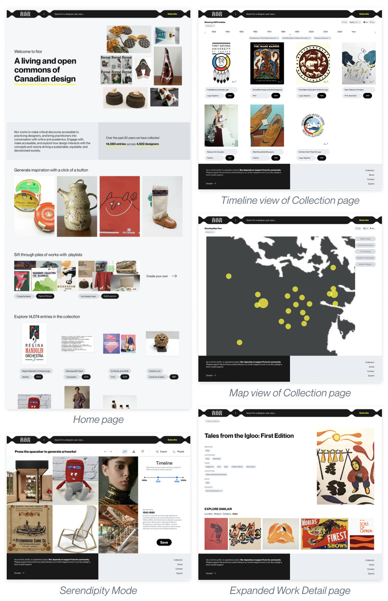
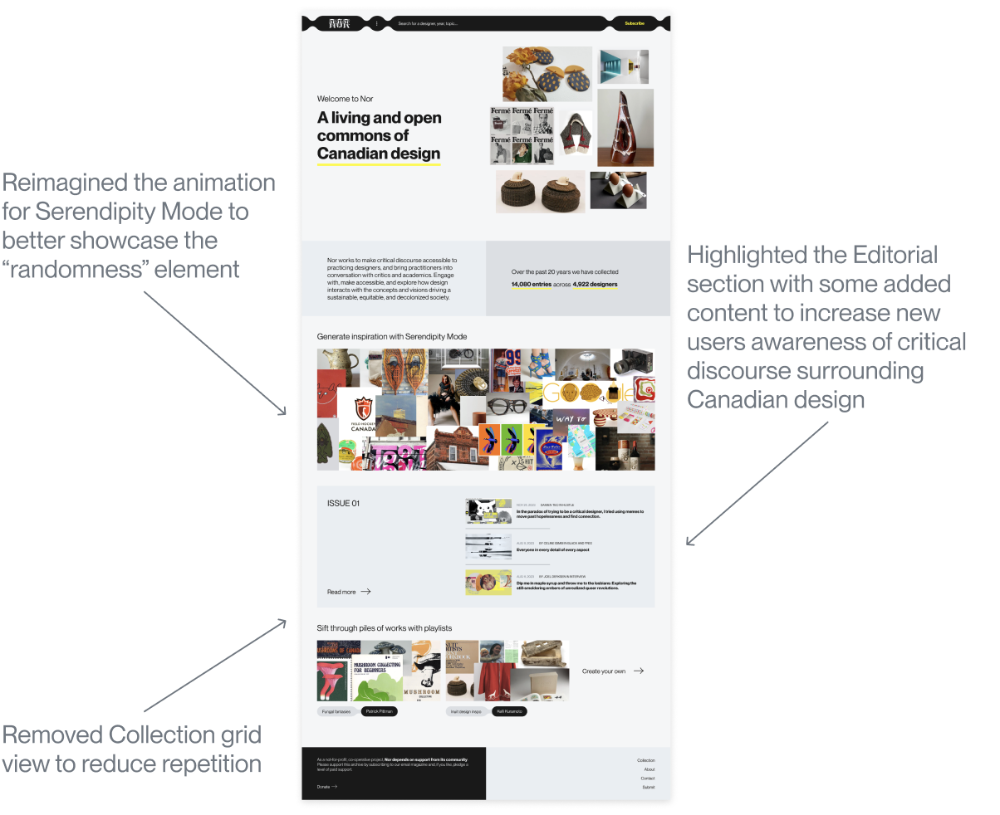
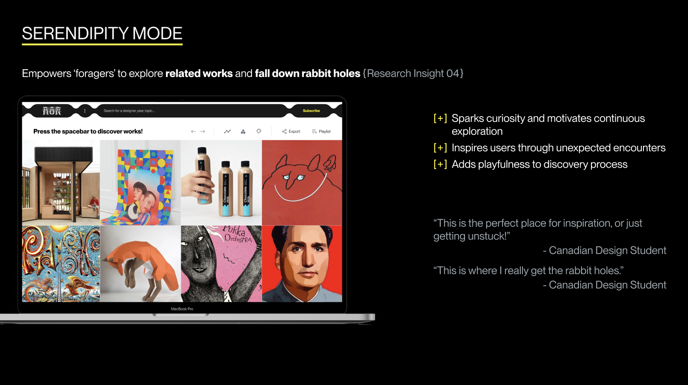
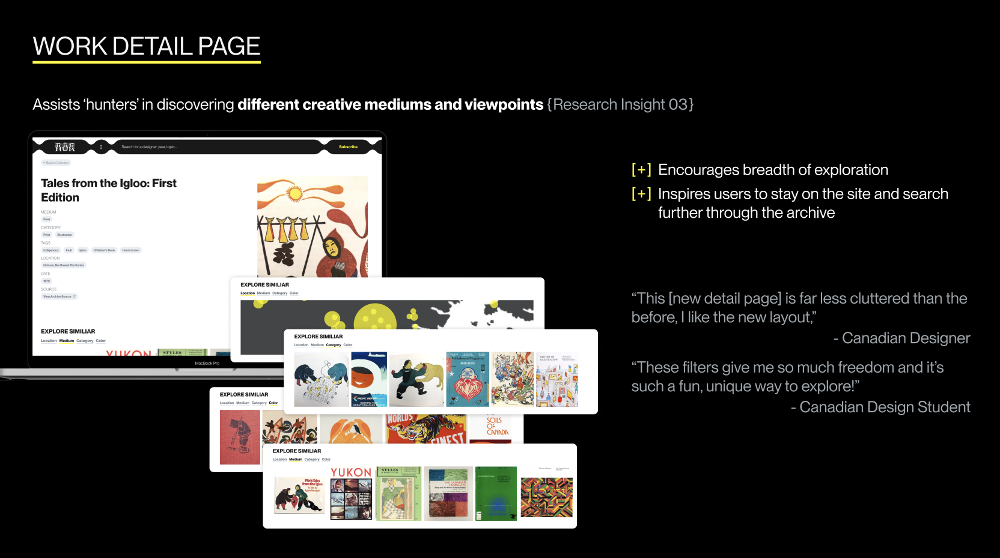
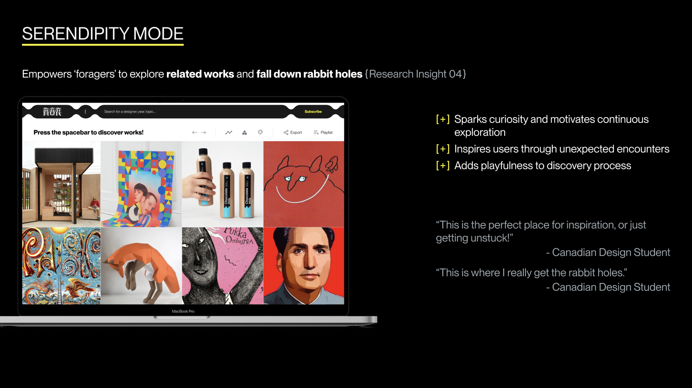
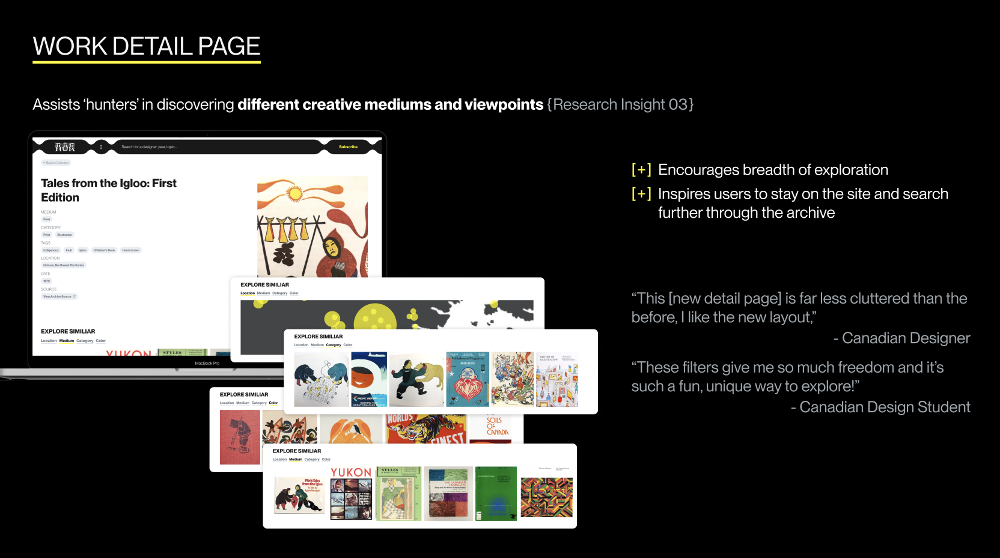

Encouraging authenticity on social media platforms through alignment with core values
Social media has become a primary form of communication in todays digital age, however, we all know that its common for online content to be inauthentic. Our project aims to bridge the gap between users’ self-perception and external perceptions on social media platforms by fostering more authenticity than what is typically seen. Ideally, this would lead to a far more genuine portrayal on social media.
Our target users are socially active individuals aged 18–35 who are receptive to self-improvement, and acknowledge the dissonance between their own self-perception and external perceptions of themselves online.
We have developed a prototype for an AI-powered social media analysis extension that analyzes users’ social media (Instagram) posts and provides personalized insights into the discrepancies between their online persona and genuine identity.
The app offers strategies for alignment based on psychological principles, empowering users to make conscious choices about their online presence. This concept integrates technology and psychology to facilitate behavior change and promote authenticity.
→ personal AI analysis of a user's feed for curated feedback
→ explore page feature for human input to enhance AI capabilities
→ VibeAI chatbot for personalized, real-time conversation
Sources for literature review
Interviews with experts in the field
Competitor analysis for similar products
01 individuals who express themselves more authentically on social media report greater life satisfaction
02 social media is a tool for self-expression and advocacy
→ bridge the gap between users' real-life personas and their online representations?
→ leverage AI to align social media profiles with personal values and goals?
→ apply principles of cognitive dissonance to minimize the conflict between a user's actual self and virtual identity
We wanted to ensure the following was included in our iterative design process:
01 Instagram credentials log-in page
02 Preliminary core values questionnaire
03 VibeAI initial profile analysis
04 Suggestions
We employed an iterative design process with real user testing and feedback consideration to create the final product of VibeAI. First, we each individually created one lo-fi prototype, to better understand each group member's thought process:

User testing showed that key desired features include a "vibe check calculator" to assess post vibes and provide specific adjustment recommendations.
Users also expressed interest in AI-generated feed ideas for new posts, rather than just feedback on existing posts.
We considered the pros and cons of our 5 low-fi prototypes and created 3 mid-fi prototypes, using componets from each design:
User testers demonstrated a strong preference for having specific recommendations about what to post and what to take down, appreciating the specificity and details
Users also express varying preferences regarding privacy and feedback sources, suggesting options for real vs AI feedback to enhance accuracy
To kick off the prototyping stage, we each created paper prototypes of our own individual interpretations of the 5 key concepts we chose to pursue. This allowed us to explore a wide breadth of ideas in a short timeframe

Of these 25 lo-fi prototypes, our clients were most interested in further exploring the following concepts:

01 Our advisor pushed us to think about interaction design basics such as: Layout, Content, Flow, and Intended Outcomes.
02 Our client encouraged us to “break paradigm of serving more content through a card sort” and aim for a “cohesive, innovative punk idea”.
We went back to the drawing board and generated the craziest ideas we could think up for storytelling mechanisms and discovery tools:

In order to not overwhelm our user testers, we chose five ideas to validate and test, with the aim of identifying which best meet our users' needs
We synthesized all of the user feedback from our sessions, and utilized the insights to refine our project scope. We leveraged the different discovery modes uncovered during our research phase to determine which ideas to incorporate into our final high-fidelity prototype, and came up with the following user flow:

We brought our ideas to life with images from real works featured on Nor and adherence to the brand identity:
After showing our client our first iteration, we received valuable feedback regarding the contents and visual design of the Home page. All changes implemented were to ensure users could easily recognize Nor’s purpose and key features
After placing the finishing touches, we finally finished our final prototype!
Returning to our project goals, we believe we've improved the experience of Nor by challenging the idea of what a design archive should be through our final solution:
→ Redesigned NOR's Homepage to clarify the digital archive's purpose and highlight the breadth of features from playlists to editorial articles
→ Integrated new collection views via Timeline and Map, making it easier for “hunters” to find and engage with works in a variety of ways
→ Introduced Serendipity Mode, a dynamic discovery tool for “gathers” to spontaneously explore and gather inspiration
→ Newly revamped Work Detail page with an added related works section to encourage a wider breadth of exploration

 



Please enter full screen for the full experience